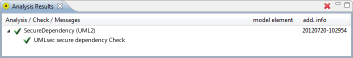

This check analyzes UML static structure diagrams marked with the UMLsec stereotype «secure dependency» (cf. "Secure Systems Development with UML", p. 59 ff.). For each «usage dependency» marked with «call» or «send», the check analyzes if the involved classes and interfaces fulfill the rules of the «secure dependency» property.
Annotate a package containing a class/interface structure with the «secure dependency» stereotype. Add the desired «critical» stereotypes and mark the appropriate methods in the tags. After this steps are done, create a new CARiSMA analysis on the model. Add the Static Secure Dependency Check to the used checks and click "Run" to start the analysis.
The Analysis Results View displays whether the check was successful. If any «critical» section is not defined in all involved classes and interfaces, information about the location and type of that violation are also displayed in the Analysis Results View.
The example model is consciously designed to contain a «secure dependency» violation, which is described in the Analysis Results View.


After correcting the model, the analysis reports the success of the check.
